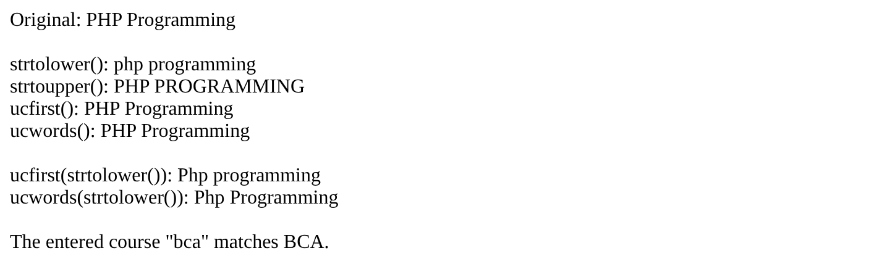

Write a PHP code to demonstrate string case functions.
Program 6.5: Demonstrating String Case Functions
strtolower(), strtoupper(), ucfirst() and ucwords().Concepts used
The four case-conversion functions, combining functions, case-insensitive comparison.
Test data: Text: "PHP Programming"; user entry for comparison: "bca" against the course code "BCA".
Logic
- Display the text after each of the four functions.
- Display
ucfirst()anducwords()applied afterstrtolower(). - Compare a user entry with a stored code after converting both to the same case.
Code
<!DOCTYPE html><html lang="en"><head> <meta charset="UTF-8"> <title>String Case Functions</title></head><body> <?php $text = "PHP Programming"; echo "Original: $text<br><br>"; echo "strtolower(): " . strtolower($text) . "<br>"; echo "strtoupper(): " . strtoupper($text) . "<br>"; echo "ucfirst(): " . ucfirst($text) . "<br>"; echo "ucwords(): " . ucwords($text) . "<br><br>"; echo "ucfirst(strtolower()): " . ucfirst(strtolower($text)) . "<br>"; echo "ucwords(strtolower()): " . ucwords(strtolower($text)) . "<br><br>"; $entered = "bca"; $courseCode = "BCA"; if (strtoupper($entered) == $courseCode) { echo "The entered course \"$entered\" matches $courseCode."; } ?></body></html>
Output
These are real screenshots, taken by running the program with the test data.

Understanding the output
The first two converted lines show complete conversion. The next two lines are unchanged because ucfirst() and ucwords() only raise first letters and never lower the others. The combined forms give the sentence form "Php programming" and the title form "Php Programming". The last line shows a practical use of case conversion: comparing values without regard to the case in which the user typed them.
How it works
strtolower() and strtoupper() change every letter. ucfirst() and ucwords(), applied directly to "PHP Programming", find that the first letters are already capitals and leave the other letters unchanged, so the text appears as it was. When strtolower() is applied first, the text becomes "php programming"; ucfirst() then capitalises only the first letter, and ucwords() capitalises the first letter of each word. In the last part, the entry "bca" is converted to "BCA" before comparison, so it matches the stored code although the user typed it in small letters.
Run it yourself
Real PHP 8.3 runs inside your browser (nothing is sent to a server). Forms, links, cookies and sessions work as they do in XAMPP. The first run downloads PHP, so it needs internet and takes a few seconds.
Try this:
- Change the original string to
"wEB dEVELOPMENT". - Change the entered course to
"Bca". Does it still match?
Running it in XAMPP
Save the file in C:\xampp\htdocs\phpbook\ch06 and open http://localhost/phpbook/ch06/case.php.
Common mistakes
- Expecting ucwords("PHP PROGRAMMING") to give Php Programming; the string must first be converted with
strtolower(). - Comparing "bca" == "BCA", which is false because string comparison is case-sensitive.
- Using
ucfirst()when every word should begin with a capital letter.